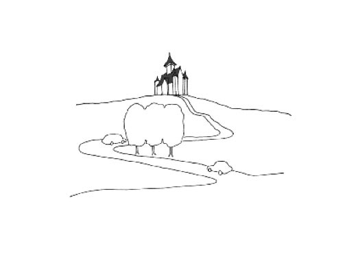

Game + Play + Level Design!
Review "What is a Game?" from Week 0.
Verbs
Accept
Accuse
Achieve
Acknowledge
Acquire
Adapt
Add
Adjust
Admire
Admit
Adopt
Adore
Advise
Afford
Agree
Aim
Allow
Announce
Anticipate
Apologize
Appear
Apply
Appreciate
Approach
Approve
Argue
Arise
Arrange
Arrive
Ask
Assume
Assure
Astonish
Attach
Attempt
Attend
Attract
Avoid
Awake
Bake
Bathe
Be
Bear
Beat
Become
Beg
Begin
Behave
Believe
Belong
Bend
Bet
Bind
Bite
Blow
Boil
Borrow
Bounce
Bow
Break
Breed
Bring
Broadcast
Build
Burn
Burst
Buy
Calculate
Can/Could
Care
Carry
Catch
Celebrate
Change
Choose
Chop
Claim
Climb
Cling
Come
Commit
Communicate
Compare
Compete
Complain
Complete
Concern
Confirm
Consent
Consider
Consist
Consult
Contain
Continue
Convince
Cook
Cost
Count
Crawl
Create
Creep
Criticize
Cry
Cut
Dance
Dare
Deal
Decide
Defer
Delay
Deliver
Demand
Deny
Depend
Describe
Deserve
Desire
Destroy
Determine
Develop
Differ
Disagree
Discover
Discuss
Dislike
Distribute
Dive
Do
Doubt
Drag
Dream
Drill
Drink
Drive
Drop
Dry
Earn
Eat
Emphasize
Enable
Encourage
Engage
Enhance
Enjoy
Ensure
Entail
Enter
Establish
Examine
Exist
Expand
Expect
Experiment
Explain
Explore
Extend
Fail
Fall
Feed
Feel
Fight
Find
Finish
Fit
Fly
Fold
Follow
Forbid
Forget
Forgive
Freeze
Fry
Generate
Get
Give
Go
Grind
Grow
Hang
Happen
Hate
Have
Hear
Hesitate
Hide
Hit
Hold
Hop
Hope
Hug
Hurry
Hurt
Identify
Ignore
Illustrate
Imagine
Imply
Impress
Improve
Include
Incorporate
Indicate
Inform
Insist
Install
Intend
Introduce
Invest
Investigate
Involve
Iron
Jog
Jump
Justify
Keep
Kick
Kiss
Kneel
Knit
Know
Lack
Laugh
Lay
Lead
Lean
Leap
Learn
Leave
Lend
Lie (in bed)
Lift
Light
Lie (not to tell the truth)
Like
Listen
Look
Lose
Love
Maintain
Make
Manage
Matter
Mean
Measure
Meet
Melt
Mention
Might
Mind
Miss
Mix
Mow
Must
Need
Neglect
Negotiate
Observe
Obtain
Occur
Offer
Open
Operate
Order
Organize
Ought to
Overcome
Overtake
Owe
Own
Paint
Participate
Pay
Peel
Perform
Persuade
Pinch
Plan
Play
Point
Possess
Postpone
Pour
Practice
Prefer
Prepare
Pretend
Prevent
Proceed
Promise
Propose
Protect
Prove
Pull
Punch
Pursue
Push
Put
Qualify
Quit
React
Read
Realize
Recall
Receive
Recollect
Recommend
Reduce
Refer
Reflect
Refuse
Regret
Relate
Relax
Relieve
Rely
Remain
Remember
Remind
Repair
Replace
Represent
Require
Resent
Resist
Retain
Retire
Rid
Ride
Ring
Rise
Risk
Roast
Run
Sanction
Satisfy
Scrub
See
Seem
Sell
Send
Serve
Set
Settle
Sew
Shake
Shed
Shine
Shoot
Show
Shrink
Shut
Sing
Sink
Sit
Ski
Sleep
Slice
Slide
Slip
Smell
Snore
Solve
Sow
Speak
Specify
Spell
Spend
Spill
Spit
Spread
Squat
Stack
Stand
Start
Steal
Stick
Sting
Stink
Stir
Stop
Stretch
Strike
Struggle
Study
Submit
Succeed
Suffer
Suggest
Supply
Suppose
Surprise
Survive
Swear
Sweep
Swell
Swim
Swing
Take
Talk
Taste
Teach
Tear
Tell
Tend
Think
Threaten
Throw
Tiptoe
Tolerate
Translate
Try
Understand
Vacuum
Value
Vary
Volunteer
Wait
Wake
Walk
Want
Warn
Wash
Watch
Wave
Wear
Weep
Weigh
Whip
Will
Win
Wish
Would
Write
Verbs tell us what the player(s) can do in the game.
When pitching or scoping a game project, it's helpful to describe your idea in a few sentences, including verbs that introduce the main mechanic(s) of the game.
For example, when describing a premise:
e.g. A (noun) that (verbs) a (noun) and (verbs) (nouns).
And when describing a conditional event or state change:
e.g. If / when (noun) (verbs) a (noun), a (noun) (verbs).

An egg-shaped dog that stretches very high and collects strawberries.
When eggdog collides with something that's not a strawberry, the player loses.
What are the verbs in your game (meaning: what can the player do on a moment to moment basis in your game)?
When considering your own variations, try out different sentences that might be interesting. Remember to keep your sentences short and simple.
As your game grows in depth and complexity, you may find yourself with a rich collection of sentences in your game plan.
Level
Once you have a list of actions and events, you’ll need a place for them to occur.
A level is a space where a game happens. [...] All these game spaces set boundaries for players to move and interact.
Different levels offer variation. For example all basketball courts have similar shapes, but an outdoor court and an indoor gym offer different experiences, cultures, and moods.
Level designers focus on how different game spaces can make players feel and behave.
What is level design?
There are two ways to understand level design:
- formal industrial sense of capital-L capital-D "Level Design" without environment art;
- broad common sense "level design" which includes environment art / anything in a level.
For your projects, you will be assessed on level design as a whole (visuals, environment properties, etc.)
However, at the prototyping stage when you're developing a level or game mechanic, it's more conventional to take the approach of Level Design, which includes building a functional layout with simple maps and grayboxing.
Think of this as wireframing a level with placeholder assets. The non-functional "art" aspects such as modeling, lighting and texture don't need to happen before you can consider things like navigation, composition, interaction, movement, trajectory, and physical feel of the game.

But before we start thinking about level layout, we need to know...
What is your level trying to accomplish?
- Are you teaching the player a new mechanic?
- Are you telling a story?
- Are you making a space for recreational relaxation or competitive battle?
Think through what you’re trying to do and jot down what a player should experience over the course of the level, and what should they take away from being or acting in this space?

In terms of the ball game, think about how the rules of the game are conveyed through visual cues or props on the original playing field's setup and design. (e.g. a line, a point, a bounded area...)

For your projects, consider layering your level with your own intentions for:
- how the level directs a player's experience
- how objects are revealed to the player
- what the objects or places can represent
- how time and space unfolds for the player
- how you can work with the player's imagination through sensory affect, perception, and cognition / consciousness... or what we call the "phenomenology" of the player.
Layout
After you’ve nailed down what your goals and concepts are for your level. you can begin sketching or laying out ideas.
If you need to communicate your level to others in a team, you’ll need to be more detailed and clear about your level. If it’s just you, then your layout can be a sketch, scribble, or anything that will aid in planning the space.
Environmental Expressivity
When thinking about a player’s movement through your level, at both micro and macro scales, there are features to consider about the environment that can exist from intrinsic to the concept of the game to helping a player know where to go next.
Choice
Which are the possible actions? Is there a point of no return?
Legibility
How does the player understand what they can and can't do in the world. A ladder implies climbing. Red tape implies no crossing.
Signposting
Showing where to go with a big landmark (see weenies in theme park design) - another method can be leading using lighting (tendency to avoid darkness, trying to find a light)
Progression of different spaces

Unlocking new areas, moving from small tunnels to open fields, different types of rooms (or a series of the same room)
How a player experiences a space is strongly influenced by how they arrive in it. Play with dichotomies:
- cramped -> open;
- light -> dark;
- mundane -> sacred.
Denial and Reward
Add weight to a reveal, induce momentary “lostness”

Easter eggs
Hidden objects, images, and notes elicit close focus on the environment.
Confusion / Surprise
Did I break the game? Am I supposed to be in this place? Jank can be a form of storytelling.
Or the spectacle of surprise!

Spatial Sound
A call from afar, music in the distance.
External Forces
Climbing, falling, descending, flying...
Where are you taking us?
Are we going down into the underworld or climbing towards heaven?
How are we getting there and how does that feel?
Spatial Memory
A place can feel familiar through multiple avenues - via the senses, and via various objects. And, through multiple scales - e.g. going to two Wal-Marts in the USA vs two Costcos in the USA/Japan. The 'components' of a place act together to give you this collection of memories, and if those components are present in high enough density in another part of the world, they can act to dredge up memories - even to the scale of perceiving something to be where it isn't.
Levels of games, virtual environments, can become part of our spatial memories.
Some game levels rely on the cues drawn from a collectively shared spatial memory to establish a familiar scape for the players to intuitively navigate. (e.g. those who already know soccer will know what to do with a goal post.)
When adapting from an existing game, you may choose to reference, exclude, or modify notable or iconic characteristics of the original environment to guide your player towards different behaviours.
...and perhaps even subvert these expectations!
Mechanical Properties
Are there any obstacles, features, or affordances of the game's levels that affect play? Examples might include:
- different material types of tennis court (clay, grass, etc)
- animated or dynamic obstacles
- how the players or game could change the landscape over time.
Consider the "rambunctiousness" of your levels
- Game worlds should be substrates, not vessels.
- Games should suggest the power of nonhuman agency.
- Game worlds ought to surprise us.
- Games should entangle us.
- Games should support a wider range of player-environment interactions.
- Games should leverage scale.
- The people who make games should take into account the energy and resource demands of their games.
- Games should take us outdoors.
- Graphics shouldn’t be everything.
- Games should help us mourn.
Ideas and Inspiration
- No Clip Website - online library of digital maps from various notable video games.
- Try and re-imagine a familiar space, but distort the proportions and distances to represent other tangible/intangible aspects (sense of time, feeling, temp, safety.)
- Adapt another piece of media into a level. A chapter of a book. A song.
- Draw a map from memory of something you do every day on the computer / phone / internet … how could you represent a non-spatial thing as a place to be navigated through?
Play
Here are some elements you may consider as you figure out how you'd like players to interact with the game environment / other players:
Agency
The satisfying power to take meaningful action and see the results of our decisions and choices.
Player agency is often seen as a central element of what makes games enjoyable as an interactive media, but this is definitely worth weighing against other implications of play.
What are the implications of exercising agency? What about games without agency?
You may consider what sort of agency is given to your player(s), and what that agency could represent in that context.
Skill VS Chance
Aspects of your game that relies on the mastery of one's ability, and others that are left to the unpredictable hands of fate and random probability.
Another way of viewing chance is in terms of "risk" level -- in game design, a standard principle is to balance high risk with high reward, so players are more likely to consider taking riskier actions.
Risk assessments can become part of strategic play.
Strategy
What does the player need to do to win?
What decisions does the player make on a moment to moment basis?
How do they make those choices meaningfully?
Why would they make one choice over another?
Thematic Treatment
Same mechanics, different theme.
She believed that the main cause of poverty was land monopoly and the way to solve it was to impose a single uniform tax that would discourage speculation. So she created a game to represent this conflict. Thirty years later a man called Charles Darrow patented a modification of the landlord’s game and turned into a “pro landlord” game. It would later become Monopoly.
Learning Curve / Level Difficulty / Flow / Complexity
The difference between learning an ability, and mastering it.

I wasn't kidding when I said I'd beat this game. It's done. Normal life can resume. Got a bit stuck a few times so speed isn't great, but my goodness what a finish. No "lame horse mode" here, this is done properly.
Scaling the difficulty of your level in incremental levels can reward players at different stages of mastery.
And at a particular equilibrium of challenge and skill, you may reach the flow channel.

But if you are considering a more polemical approach that requries moments of critical reflection, you may consider going against flow.
When adjusting the difficulty of your ball game adaptation, consider the components that offer challenges to (and thus demand mastery skill) from your player.
How can you complicate these components? Does changing/removing/amplifying/negating any of these make for something more interesting?
Maybe the result isn’t a “good” game, but it becomes interesting, unexpected, outrageous…

Game Juice / Game Feel
(You'll learn this once you complete reading response 2!)
.
.
.
.
.
.
and if you're doing a multiplayer game...
Perfect information / imperfect information
A game possesses perfect information if each player, when making any decision, is perfectly informed of all the events that have previously occurred.
Imperfect information introduces uncertainty but it’s not the same as chance. Some games can have randomness with perfect information and others can have imperfect information without chance.
Competition / Cooperation
Direct targeting, such as player elimination;
Cooperating towards a common goal.
Or a little bit of both!
Symmetry / Asymmetry
Do all players play the game with similar power dynamics, or are their abilities and goals completely different according to what roles they take on?
Synchronous / asynchronous
Does play happen at the same time, or are different players acting at different times?
A game that is played between 5 to 9 in the morning and evening each day.
Some course reminders
- Ball game research for Project 2 is due next Tuesday.
- Reading Response 2 is due next Thursday.